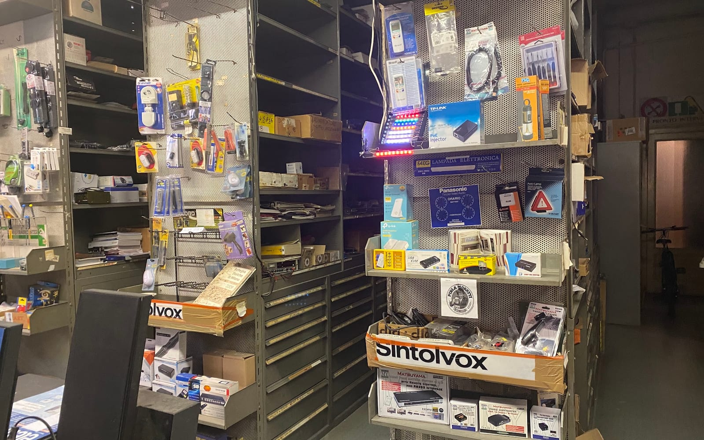
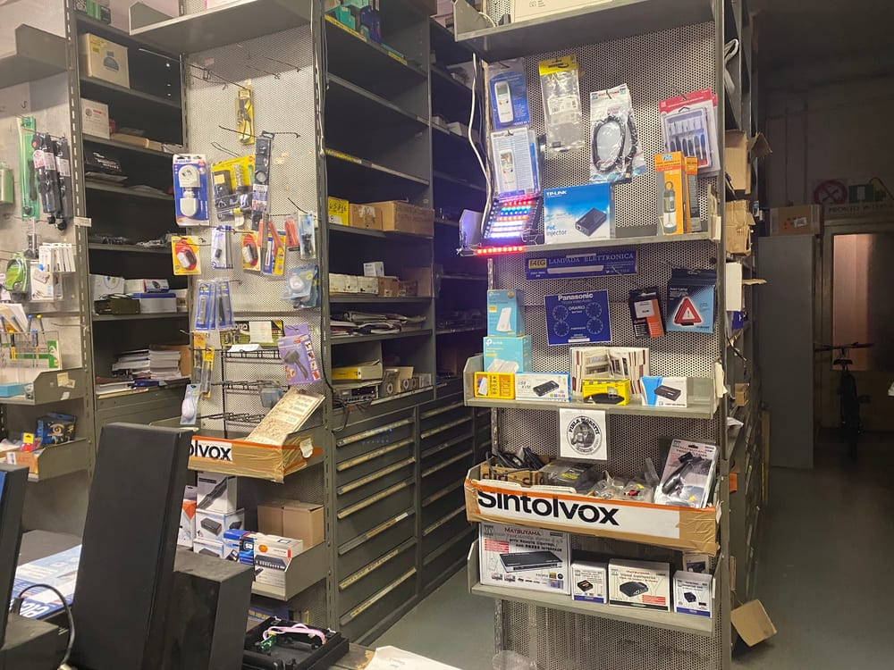
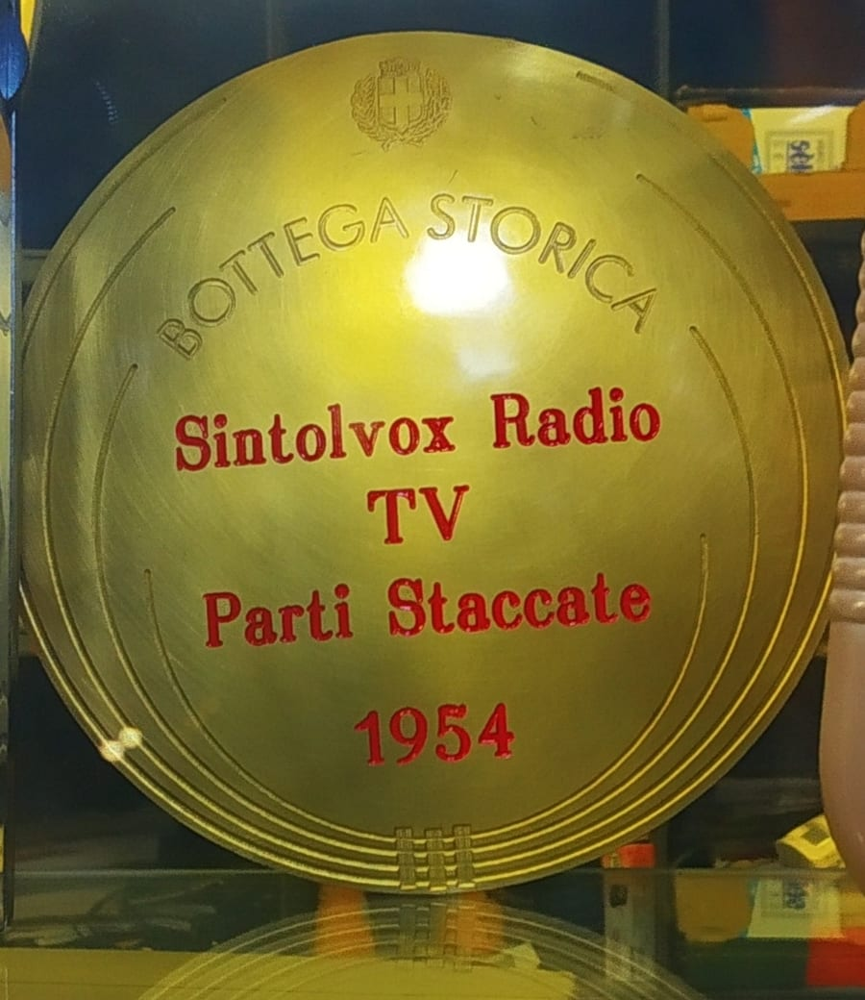
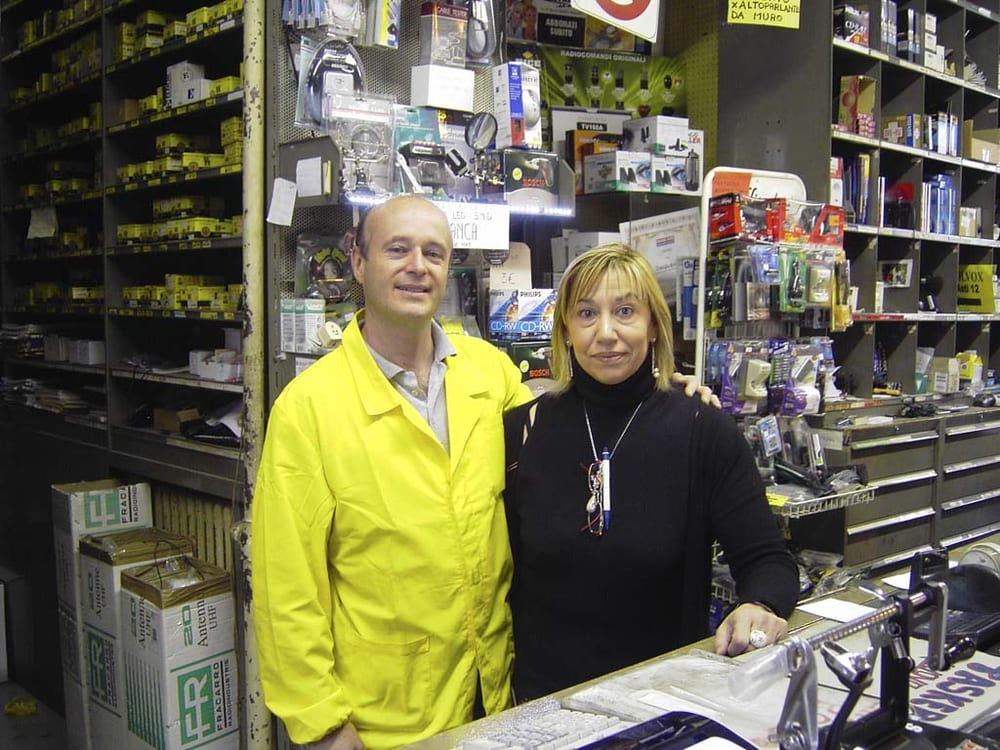
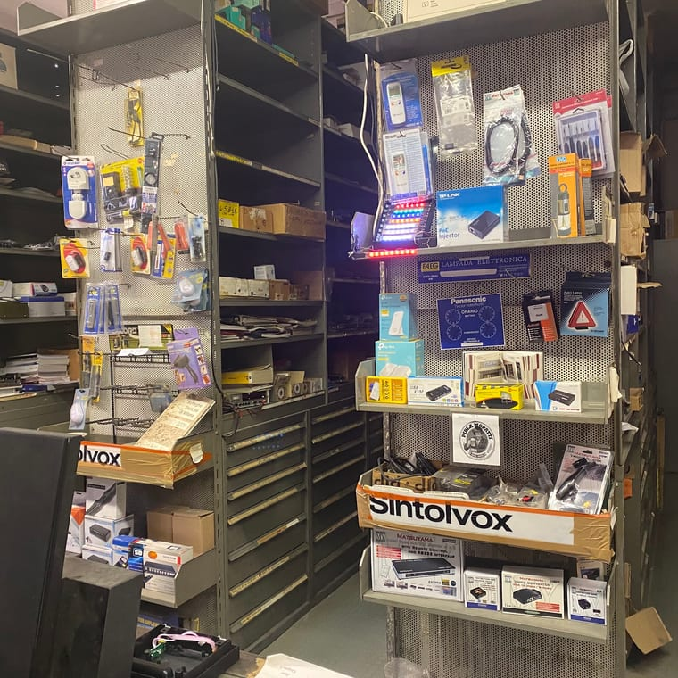
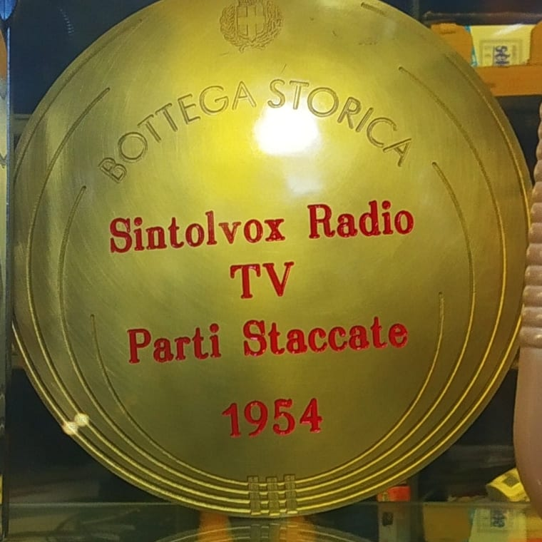
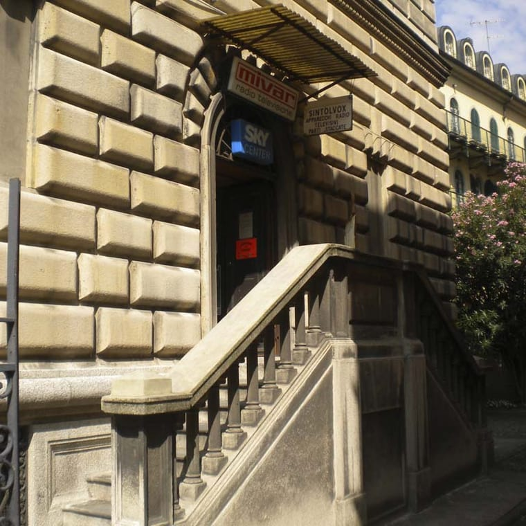
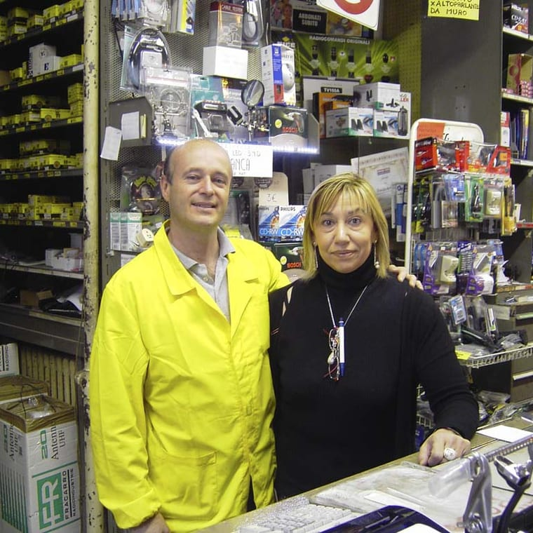
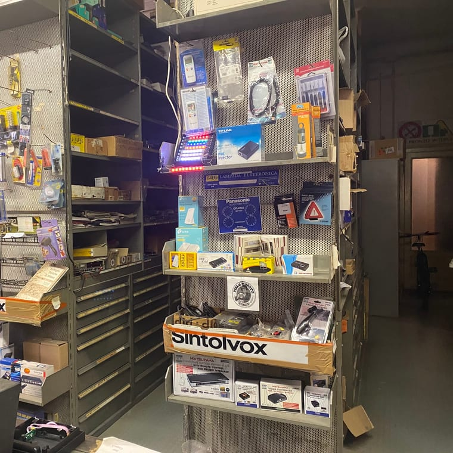

Radio
A valvole, a transistor, da collezione. E i pezzi per farle suonare ancora.

4,2 · 73 recensioni · Google
La bottega dell'elettronica della vecchia Milano, dal 1954
Il componente che non trovi da nessuna parte, la radio che torna a vivere. Dalla valvola d'epoca al monopattino elettrico.
Il gesto della bottega
Il nome lo dice: sintonia. Come una vecchia radio, la bottega si sintonizza da un mondo all'altro — e in ognuno trovi quello che cerchi.
A valvole, a transistor, da collezione. E i pezzi per farle suonare ancora.
Dal tubo catodico al digitale: apparecchi, antenne, decoder, telecomandi.
Ampli, casse, cavi, puntine e cinghie. Anche vintage e hi-end.
Il pezzo datato che non trovi altrove: valvole, minuteria, cavi Hi-Fi.
Registratori a bobina, stereo, giradischi. L'elettronica che torna a vivere.
L'elettronica di oggi, riparata con le mani di una volta.

Cosa trovi
Valvole d'epoca, cavi Hi-Fi, il connettore introvabile, la minuteria che nei megastore non esiste più. Scaffali che sembrano un archivio dell'elettronica italiana, dagli anni '50 a oggi.
E se non sai esattamente cosa ti serve, chiedi: qui il consiglio fa parte del mestiere.
«Se siete alla ricerca di un componente elettronico, specie se datato, qui con buona probabilità lo troverete. Cortesia e professionalità sono di casa.»
Il vecchio e il nuovo
Dal 1954 la stessa cura: prima la radio a valvole, poi la TV, l'hi-fi, il giradischi. Oggi anche il monopattino elettrico. Cambia l'apparecchio, non il modo di aggiustarlo.
Un posto dove l'elettronica non si butta: si ripara, si fa durare, torna a vivere.

Bottega Storica di Milano
Il Comune di Milano l'ha riconosciuta Bottega Storica: la targa d'oro porta l'anno di fondazione, il 1954. Settant'anni di elettronica nella stessa zona.
«Negozio storico di elettronica: tanti ricordi, personale competente e sempre disponibile. Per me è un'istituzione, ne sono rimasti pochi.»

La bottega
Un commerciante che ama il suo lavoro: competente, cordiale, aiuta il cliente in ogni caso. Come dicono in tanti, «quando l'elettronica fa i capricci, lui sa come prenderla».
La bottega





Dicono di noi
«Negozio storico di elettronica: tanti ricordi tutti positivi, personale competente e sempre disponibile. Per me è un'istituzione, ne sono rimasti pochi.»
Dario Mori · Google
«Esempio di commerciante che ama il suo lavoro. Competente e cordiale, aiuta il cliente in ogni caso. Quando l'elettronica fa i capricci, lui sa come prenderla.»
bertogas · Local Guide
«Se siete alla ricerca di un componente elettronico, specie se datato, qui con buona probabilità lo troverete. Cortesia e professionalità sono di casa.»
Marco Tosini · Local Guide
«Piccolo negozio della vecchia Milano: riparazione di vecchi giradischi e registratori a bobina, lo consiglio. Grazie mille Roberto per la disponibilità e la cordialità.»
Mauro Cappa · Local Guide
Dove & orari
Via Privata Asti 12, 20149 Milano · zona De Angeli / Piazza Piemonte, a pochi passi dalla M1.
| Lunedì | 09:00–12:30 · 14:30–19:00 |
|---|---|
| Martedì | 09:00–12:30 · 14:30–19:00 |
| Mercoledì | 09:00–12:30 · 14:30–19:00 |
| Giovedì | 09:00–12:30 · 14:30–19:00 |
| Venerdì | Chiuso |
| Sabato | Chiuso |
| Domenica | Chiuso |
Domande frequenti
Elettronica di consumo e componenti anche datati: radio, TV, hi-fi, giradischi, valvole, cavi, antenne, radiocomandi. Se cerchi un pezzo particolare, specie se datato, qui con buona probabilità lo trovi.
Sì: radio, stereo vintage e hi-end, giradischi, registratori a bobina. E oggi anche monopattini elettrici. L'elettronica che torna a vivere.
Dal 1954. Sintolvox è una Bottega Storica di Milano: un'istituzione dell'elettronica in zona De Angeli, ne sono rimaste poche.
Da lunedì a giovedì, 9:00–12:30 e 14:30–19:00. Venerdì, sabato e domenica chiuso.
In Via Privata Asti 12 a Milano, zona De Angeli / Piazza Piemonte. Telefono 02 462237.